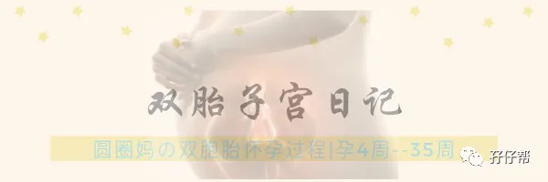

文|圆圈妈，一个文思如尿崩的双胎妈妈
图|来自网络，如有侵权，请联系删除
· 正 · 文 · 来 · 啦 ·
初月龄的双胞胎宝宝，
归根究底，有三大特点！
吃！睡！哭！
搞定这三座大山，
几乎可以
“闲看庭前花开花落，静看天外云卷云舒”
今天的推文主题：
深度剖析初月龄的双胞胎睡眠特点
以下文字节选自《双胞胎睡眠圣经》第二部分第五章：不同年龄段儿童对睡眠的不同需求。
【01】
尽早开始同步化训练
对双胞胎宝宝们进行睡眠训练是否成功,主要取决于是否可以成功地将他们的睡眠同步化。
在宝宝们还处于新生儿阶段时,因为他们的生物钟机能还没有完全发育形成,所以他们什么时候睡觉主要取决于什么时候喝奶。
父母如果可以努力将宝宝们喝奶的时间同步化,睡觉同步化的问题也就迎刃而解了。
在照顾双胞胎新生儿时,父母如果决定让宝宝们在同一时间喝奶,宝宝们就必须在同一时间全部醒来。
即便有的时候另外一个宝宝正在睡觉,父母也必须把这个宝宝一起叫起来。
在实际情况中,有的时候因为人手不足或者其他原因,父母可以允许某一个孩子比另一个孩子稍微多睡那么一会儿,但这个多余的睡觉时间应该被控制在二三十分钟以内，再长的话就会影响整个睡眠训练计划。
总之,在最开始的时候，父母的唯一目标就是让双胞胎宝宝们的进食时间保持同步,这样就不需要花数倍的时间来完成相同的一件事。
三大原则分别是：
“一个人饿了，两个人一起吃”
“一个人醒了，两个人都起床”“
一个人困了，两个人都去睡”
【02】
新生儿哭泣的原因
在双胞胎新生儿诞生后的几周内,他们对外界事物的敏感度以及他们在不睡觉时的清醒度都会不断保持上升。
有时候,宝宝们会莫名其妙地变得难以取悦,或者异常烦躁,直至痛哭不止。
我们需要对宝宝们的哭泣及哭泣背后的原因做一些了解。
① 肠胃食道逆流
早产婴儿无缘无故痛哭的原因多是因为患上了肠胃食道逆流症,你如果发现孩子们有这样的状况,应该及时带他们去看儿医。
② 饥饿
但对于多数婴儿来说,无缘无故地哭泣基本上都是因为饥饿导致,而最好的让他们停止哭泣的办法无疑就是给他们一瓶奶或者让妈妈亲自给他们哺乳。
然而我们又知道,在他们喝奶时,他们也在吮吸,而吮吸本身也是一种安抚的行为,所以真正让他们停止哭泣的究竟是奶水还是吮吸这个动作,有时还真的不好说。
有的父母会尝试先给孩子一个安抚奶嘴,如果孩子仅靠吮吸奶嘴就停止哭泣了,那他们也许还并不饿。
③ 腹痛
新生儿的哭闹还可能是因为腹痛而导致,因为我们经常看到孩子不断地伸缩双腿,有时候那是因为他们的肚子很疼。
我们有时还会发现孩子会不断打嗝和放屁,这是因为孩子在哭闹时会吸进许多空气，而小孩子以这种方式吸入空气后就有可能会造成打嗝或者放屁。
所以打嗝和放屁并不是哭闹的原因,而是哭闹所可能造成的结果。
【03】
正确对待新生儿的哭闹
双胞胎新生儿反反复复、一浪高过一浪的哭闹足以让所有家长感到头疼和厌烦,而哭闹的原因说复杂不算复杂,但说简单也绝对不算简单。
如果父母本身就因为家里大大小小的事情疲惫不堪,再赶上新生儿哭闹不止,那真是要黔驴技穷,然后静待崩溃了。
可实际上,新生儿的这种哭闹是再正常不过的事情,除非他们的哭闹维持时间过长,或者父母用尽任何办法都无法安抚他们。如果出现这两种情况,应该带孩子去就医。
在新生儿阶段,大声并且持续时间较长的哭泣应该立刻得到关注和安抚。
因为双胞胎宝宝们在大多数情况下都是因为饥饿、口渴、排便、太冷或者太热而哭闹。
哭闹是他们唯一可以采取的表达方式。
但是,宝宝们在睡觉时和尝试入睡时发出的其他一些声音是完全不必理会的,比如呜呜咽咽、低声的断断续续的啜泣、无意识的哭泣、吐气时带起的哨音等。
许多父母、保姆或者老人都会犯一个错误,就是哪怕孩子们只是发出了一点点声音,他们就立刻冲到孩子身边开始安抚。
他们过于快速的反应反而对本来正处于良好睡眠或入睡状态的宝宝们造成了影响。
如果大人习惯和小孩子们同睡在一个房间,这种情况出现的概率会大大增加,因为大人可以很轻松地听到任何声响。
有时,两个孩子之前会稍微产生一些互相打扰,大人对此可以完全不必理会。
要知道,这两个孩子在妈妈的肚子里早已经共处了好多个月了,他们比大人更知道如何和对方相处。
他们需要做的是有更多时间和机会来学习如何在新的环境下和自己的兄弟姐妹相处,如何在睡觉时不因对方的动作和声音而受到影响。
当双胞胎宝宝们继续长到预产期过后数周大小时,如果父母还是会因为一点点小的响动和哭泣就跑去安抚孩子们的话,父母就是在剥夺孩子们学习自我安抚和自行入睡的机会。
另外,这样的行为也可能会让双胞胎宝宝误以为在晚上谁哭得声音越大,谁就会获得越多父母的关注和安抚。
如果你在夜里听到你的双胞胎宝宝们在哭闹却不知道他们到底为什么哭也不知道你到底该怎么办时,请让父亲走进房间对他们进行安抚。
在这件事情上，父亲参与得越多,孩子们学会自我安抚的速度就越快。
此处请注意,许多父母会想当然地认为孩子夜里哭是因为他们饿了,而实际上预产期过后数周时,孩子已经可以睡整觉了,所以夜里那个时间绝对不应该是喂奶时间!
如果你实在不相信理论,你也可以让爸爸拿着奶瓶去给孩子们喝,然后观察一下，看看他们到底喝了多少,在喝的时候多快就会重新睡过去，你大概就会知道孩子们到底是真的饿了还是他们只是想让人陪。
如果双胞胎宝宝中的一个总是在夜间大声地、长时间地哭泣,有些家长会尝试将两个宝宝分开放到不同的房间去睡觉。
因为他们担心这个疯狂哭闹的宝宝会让另一个本来安静的宝宝无法入睡。
但实际上.研究和经验都表明,如果双胞胎里一个人哭闹一个人安静,那个安静的宝宝会自动调整自已的抗干扰能力。
即便自己的“邻居”哭得再凶猛,他也可以安然地睡一个整觉,听起来有点不可思议对不对?
但这确实是千真万确的。
个人拙见
新生儿的睡觉和喝奶，就好像一个人的嘴巴和牙齿一样，“剪不断，理还乱”！
在新生儿的生物钟机能没有发育完善或者大人没有摸清两宝宝的睡眠规律之前，姑且可以参照这个准则，即 “什么时候睡觉主要取决于什么时候喝奶。”
圆圈的睡眠之所以杂乱无章，日夜颠倒，很大原因是，我们压根没有搞清楚喝奶规律。
他们刚从医院抱回来时，我们严格遵医嘱喂30ML。
考虑到他们因早产肠胃功能发育不完善的问题，在奶量增加上有点战战兢兢，不敢给他们吃太多，于是我们就很死板地一直喂30ML。
但实际上，30ML满足不了他们！
不然，为何睡了不到一小时就哭醒了，往嘴里塞奶瓶就马上不哭。
哎，没经验真可怕！
可怜的圆圈遇到我这样的新手妈妈和“搅屎棍”般存在育儿团队，实在是“坑娃”，只好用无穷无尽的哭声抗议：“就不能多喂一点嘛！”
而我们总是在迷迷糊糊，磕磕碰碰中，才后知后觉：“哦，好像确实没吃饱！”
为此，我和婆婆曾经围绕着“他们该喝多少奶，啥时候增加奶量”这个问题，暗战过好几个回合！
马克说尽早开始同步化训练，我觉得，执行过程也许并不难，难的是搞定婆婆（或者是一起照顾两新生儿的其他合伙人）
再来说说新生儿期的哭闹问题。
圆圈的哭闹，有点奇葩！与他们是雄性动物这个身份格格不入！
我总是嫌弃他们哭得不够大声，刚出生那会儿，就哭得像流浪的小猫小狗，有气无力。月子期间，奶也喝过不少，哭声依然不够洪亮有劲！
可是，即便是如此没有power的哭声也能把我们折磨得如炸毛般的母狮，焦灼烦躁，甚至出现幻听...明明是猫在叫，皆以为是两个崽在哭！
这是多么“惊弓之鸟”啊！
他们睡觉很不踏实，总是会发出一些呜呜咽咽的声音。
多亏小姑子有带新生儿的经验，每当他们好像似醒非醒，头扭来扭去，开始啜泣时，她就会轻轻用手拍拍肩膀或者屁股，这个办法百试百灵！
初月龄的圆圈，在双胞胎互相干扰这问题上，还不是很明显！
他们哥俩起源于同一个受精卵，并在子宫内共处数月，彼此的熟悉程度，丝毫不会比大人少。
正如马克所言，「这两个孩子在妈妈的肚子里早已经共处了好多个月了,他们比大人更知道如何和对方相处」。
即便存在相互干扰，那也是因为环境的变化引起的，彼此还需要重新在新环境下找到默契感和新的和睦共处方式。
其实，相比往后的日子，初月龄的双胞胎还算是温和的！
不信？把娃娃们生下来，你来试试看哈！!
-END-
今日互动话题
#你家的双胞胎新生儿经常哭吗？#
评论区聊一聊
说说你的经历吧
一好文推荐一
一加入社群一
一关注孖仔帮一
点击“阅读原文”，直达双胞胎育儿网站www.sgguy.com.


